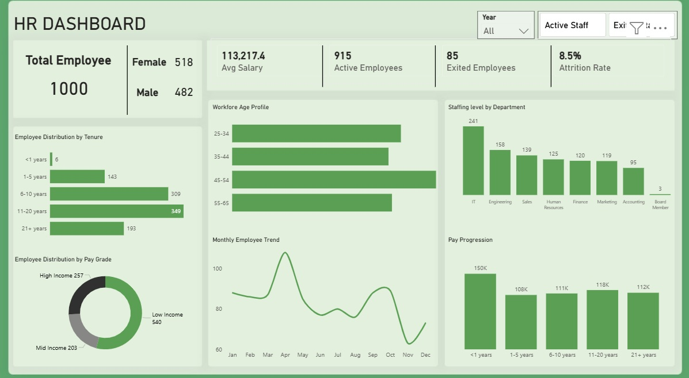
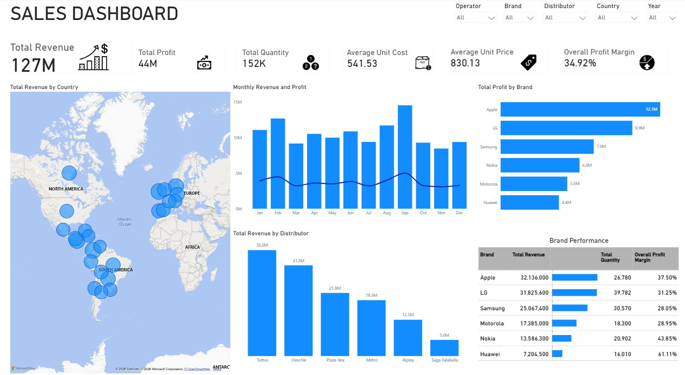
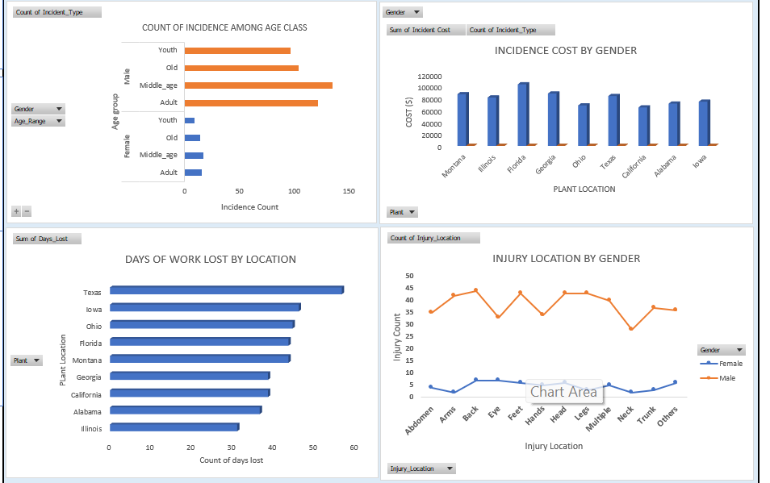

This productivity dashboard highlights product performance through revenue, profit, and return metrics. It compares top and bottom-performing products, analyzes return rates, and explores the relationship between price and quantity sold. Additionally, it tracks hourly and daily performance trends, providing insights into overall operational efficiency and sales patterns.

This HR analysis was conducted on PowerBi. The dashboard provides a concise overview of workforce metrics, including total employees, gender distribution, average salary, and attrition rate. It visualizes employee trends across tenure, age groups, and departments, while also highlighting pay distribution and progression. Overall, it offers clear insights into workforce composition, retention, and organizational structure.

This sales dashboard gives a clear, high-level view of business performance, highlighting key metrics like revenue, profit, and margin. It combines interactive filters with visualizations to explore trends over time, geographic distribution, and brand performance. Overall, it enables quick, data-driven insights into what’s driving sales and profitability.

This financial overview dashboard provides a clear, high-level snapshot of business sales metrics. It features prominent KPI cards for total sales, profit, and volume, alongside dynamic visualizations like monthly sales trends and product-level performance breakdowns (sales vs. costs). Additionally, it analyzes the impact of different discount bands on total sales, offering an intuitive, data-driven tool for financial decision-making and business strategy.

A comprehensive health and safety dashboard designed to monitor and analyze workplace incidents. This visualization breaks down incident counts by age group and gender, evaluates the financial cost of incidents across various plant locations, and tracks days of work lost. It also includes a trend analysis of specific injury types, providing organizations with actionable insights to identify high-risk areas and improve workplace safety protocols.

This public health dashboard analyzes patient data across the Bedfordshire, Luton, and Milton Keynes (BLMK) region, focusing specifically on obesity metrics. It effectively visualizes key performance indicators like obesity prevalence across different local authorities, correlates obesity rates with average deprivation scores, and breaks down population distribution by age. The clean, green-toned layout is designed to help healthcare professionals and policymakers easily spot regional health trends.